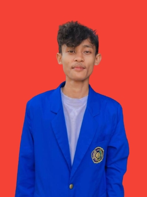

Curiculum Vitae (CV)
BIODATA PRIBADI

Nama Lengkap : Safriansyah
Jenis Kelamin : Pria
Tempat Tanggal Lahir : Maros, 12 Oktober 2000
Status : Mahasiswa
Tinggi Badan : 165 Cm
Berat Badan : 55 Kg
Agama : Islam
Telepon : 081344010131
Email : Safriyansah58@gmail.com
RIWAYAT PENDIDIKAN
SD : SD Inpres 39 Kabupaten Sorong (Tahun 2006-2012)
SMP : SMP Negeri 1 Kabupaten Sorong (Tahun 2012-2015)
SMA/SMK : SMK Negeri 1 Kabupaten Sorong (Tahun 2015-2018)
Perguruan Tinggi : Universitas Muhammadiyah Sorong (Tahun 2018- Sekarang)
KEMAMPUAN
Pengalaman Kerja : -
Skill : Main Komputer
Hobby : Dengar Musik